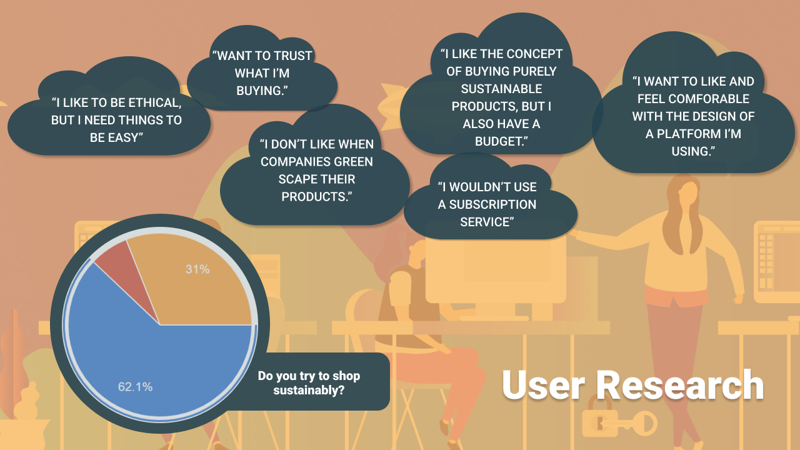

The app began with User Research. First the team devised a survey and invited respondents through our respective social media circles. In our in-person interviews, we had more ablitity to explore users' responses and ended up with a few key takeaways:

We imaged our typical user as a young professional whose money doesn't ever seem to go as far as it should. She tries to make the right decisions, but because there's never enough time and money, she often finds herself supporting businesses that she wishes she didn't.
The only thing Chloe hates worse than finding out a brand she's supported in the past does harm in the world is seeing companies market themselves as Green, even though they do little to actually help.